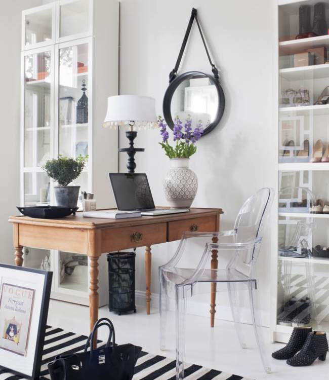

Portfolio Kammakargatan

Kammakargatan
When my client first walked in to my first little shop in Vasastan we hit it off right away, connecting over our background in the United States as each of us had lived there for many many years. It was soon decided that I would take on her and her husbands first apartment in Stockholm.
Strong contrast between black and white was softened with greige wall color and blue accents making this a modern and young interior. The apartments turn of the century architectural details further added charm and character. The kitchen was moved from the back of the apartment to be next to the living room, separating the two spaces with beautiful old glass doors.
To house my clients large shoe and (gorgeous) bag collection, the old kitchen was transformed into a large dressing room with plenty of space for a desk facing the large window towards the courtyard.